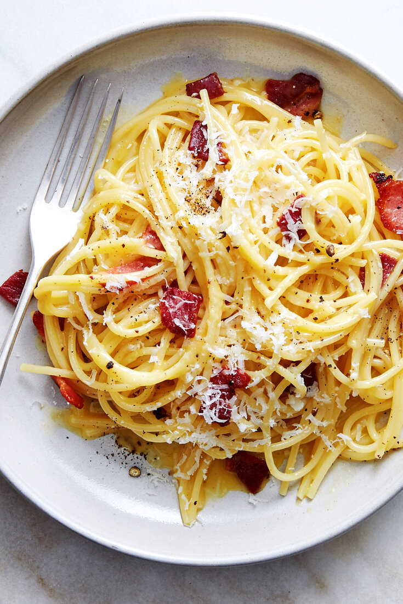

Паста

Описание
Паста карбона́ра — спагетти с мелкими кусочками гуанчиале или панчетты, смешанные с соусом из яиц, сыра пекорино романо,
соли и свежемолотого чёрного перца. Этот соус доходит до полной готовности от тепла только что сваренной пасты.
Ингридиенты
- Паста
- Панчетта/гуанчале
- Яйца
- Пармезан/пекорино романо
- Чеснок
- Соль
- черный перец(специи)
- Оливковое масло
Шаги приготовления
- В большой кастрюле доведите до кипения подсоленную воду.
- Добавьте пасту и варите до состояния «аль денте» согласно инструкции на упаковке. Сохраните немного воды от варки
- В миске смешайте яйца, тертый сыр, щепотку соли и много черного перца. Хорошо взбейте до однородной массы
- Нарежьте панчетту или гуанчале на небольшие кусочки
- В большой сковороде на среднем огне обжарьте мясо до золотистой корочки. Если используете чеснок, добавьте его в сковороду за пару минут до готовности мяса, чтобы он отдал аромат
- Когда паста будет готова, слейте воду, оставив немного (примерно 1/2 стакана)
- Переложите горячую пасту в сковороду с мясом. Снимите сковороду с огня
- Быстро добавьте яичную смесь к пасте, хорошо перемешивая, чтобы яйца не свернулись. Если соус слишком густой, добавьте немного воды от варки пасты для достижения нужной консистенции
- Подавайте пасту карбонару сразу же, посыпав оставшимся тертым сыром и добавив еще черного перца по вкусу